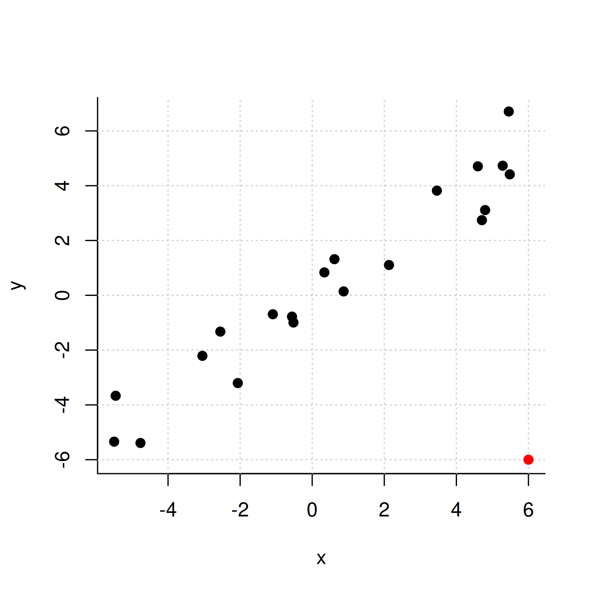
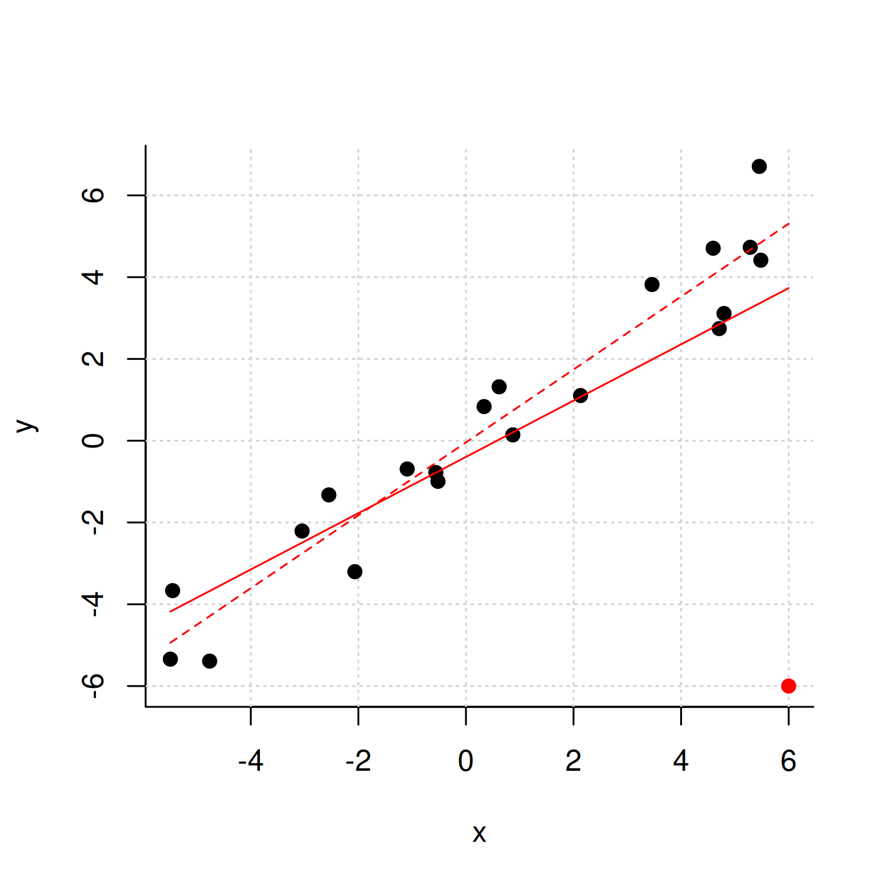
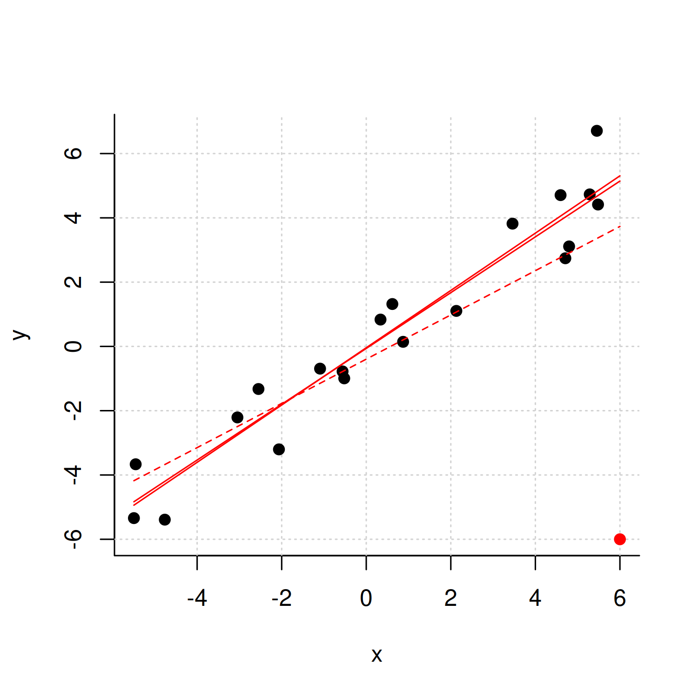
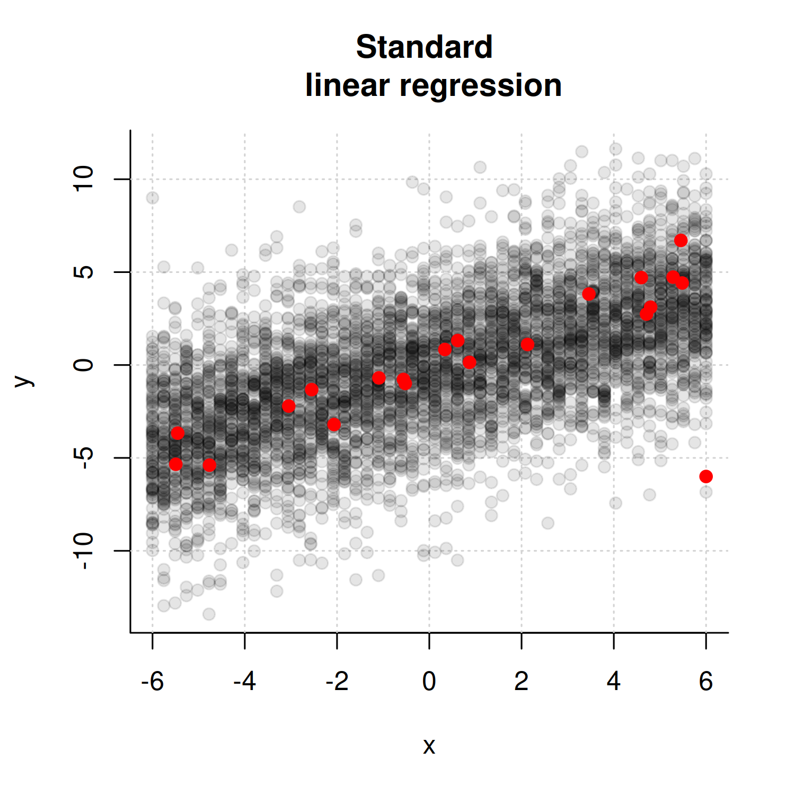
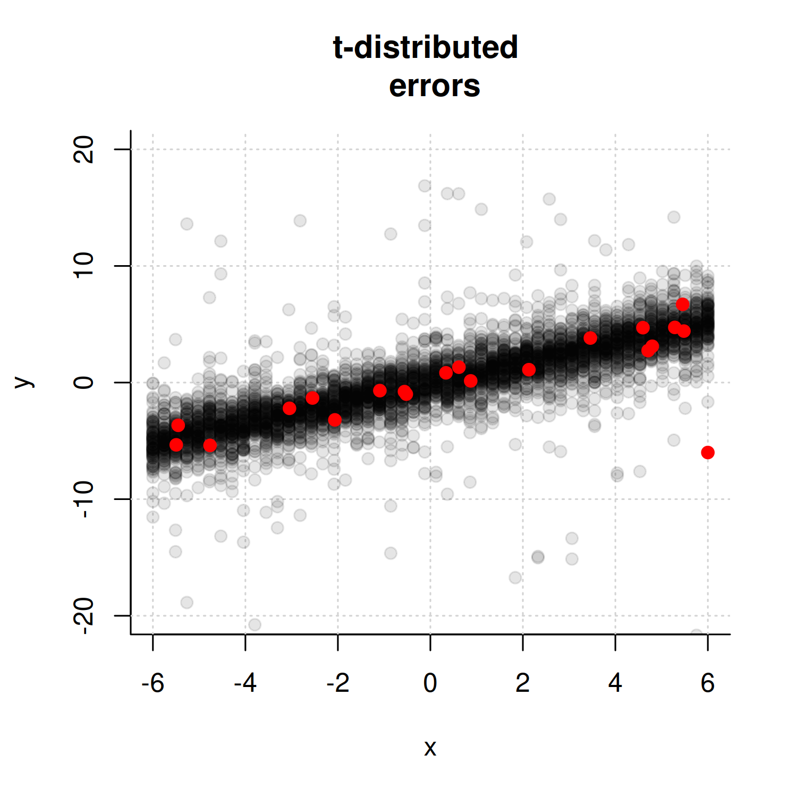
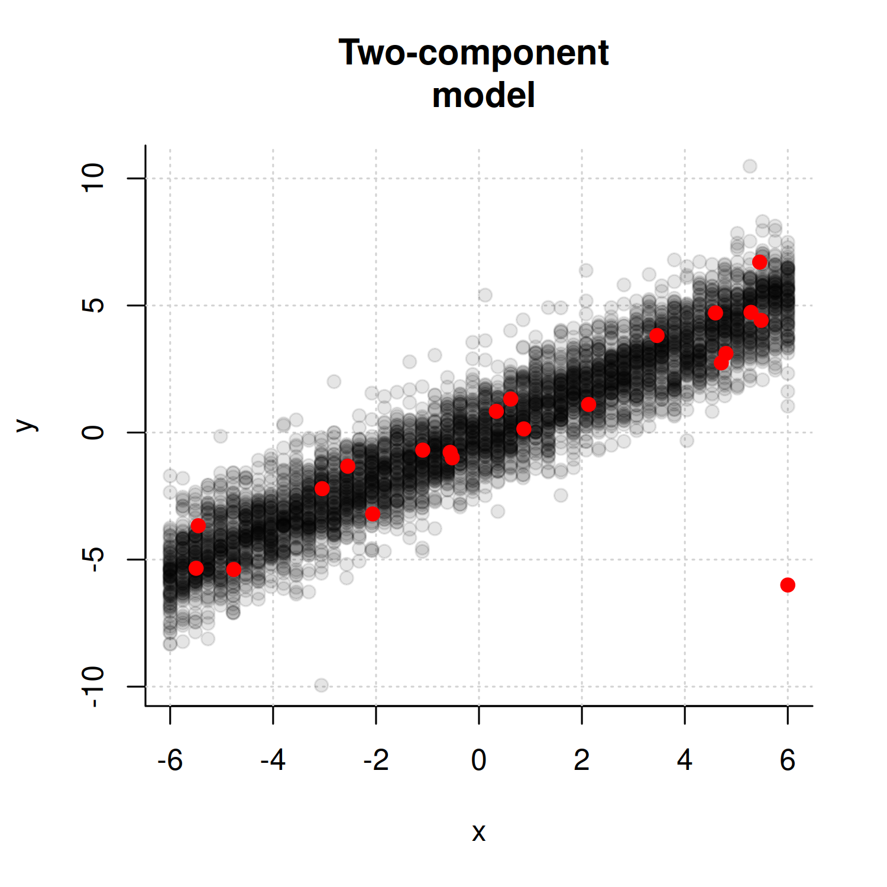

In the scatterplot in Figure 1 we see a dataset of 21 observations. The first 20 observations – the black dots – seem to follow a nice linear relationship, but there’s one annoying outlier lurking in the lower right corner (the red dot).

If one fits a regression line to this data, the slope is slightly less than it would be had the outlier not been there. In Figure 2, the solid line is a regression to all data points while the dashed line is a regression to the data excluding the outlier. It is clear that the outlier has a strong influence on the slope of the regression line.

A robust regression on the other hand is one that can be fit to the dataset as a whole, but which does not let the outlier influence the regression line (at least not as much). (For more technical and in-depth discussion I refer the reader to Gelman et. al (2020), chapter 17). It is "robust" to outliers.
Let us fit a few models to the dataset in Figure 1 (for model codes see endnote 1):
- A standard linear regression with Gaussian errors: y = a + bx + e, e ~ normal(0, sigma)
- Linear regression with t-distributed errors: y = a + bx + e, e ~ student_t(nu, 0, sigma), in which nu is degrees of freedom for the student t distribution and determines the fattiness of the tails.
- A 2-component mixture model in which the observation comes from the standard linear regression (model 1) with probability (1 – lambda) and from a “contaminant” distribution (here: Gaussian with large standard deviation) with probability lambda. In plain English, this model assumes that there are two data generating processes. For example in the context of a reaction time test, the participant might sometimes get distracted – or accidentally push the response button too fast – and these responses wouldn’t be interpreted as reflecting e.g. their true processing time required for classification. They are “contaminants”. (See Zeigenfuse & Lee, 2010).

Models 2 and 3 are typically considered as “robust”. Reason for this is clear from Figure 3: the solid line shows the best fit (posterior mean) regression line for the standard Gaussian model while the black and red dashed lines – which are difficult to tell apart since they are so similar – show the best fit lines for the t- and 2-component models, respectively.
Based on just the regression lines, it would seem that – indeed – models 2 and 3 are less influenced by the outlying observation. They are robust, as was promised.
But let's take a deeper look into the minds of the models: if we look at what the models predict, we can kind of see what the models "think"; through what coloured lenses they see the world. Figure 4 shows predictions (the translucent black dots) for the standard Gaussian model, t-distribution model and the two-component model, respectively. The red dots are the data points.



We can make a few observations:
- The standard Gaussian model adjusts to the outlier by decreasing the slope and increasing the estimated standard deviation of errors: compare the spread of the predicted values with the spread of data (red dots) or the third panel.
- Predictions from the t-distribution model are more tightly clustered around the regression line, but the model also predicts observations to sometimes be far (really far, just look!) from the regression line in both directions.
- The 2-component model ignores the outlier and predicts the data (for the linear component) to follow the regression line closely. This is basically a Gaussian regression without the outlier.
All of these models encode very different assumptions about the underlying data generating process and how the data has been collected. The predictions they make are qualitatively very different.
- The standard Gaussian model doesn’t see the outlier as an outlier at all. Rather, it is taken as an informative observation. Instead of seeing the outlier as a problem, we let it cast doubt: why the first 20 observations seem to imply much stronger relationship between the variables than the data as a whole? This model predicts that the data should have larger spread than what’s observed. Perhaps, for whatever reason, most of our sample underestimates the true variability and caution should be exercised when making inferences!
- The t-distribution model sees the outlier as a kind of semi-outlier. The outlier does not have as strong influence on the conditional expectation (regression line), but this comes at the expence of precision: while this model predicts most of the data to be around the observed values it also is consistent with large deviations from the mean. This is different from model 1 which sort of takes the outlier seriously and adjusts the slope of the regression line.
- In the 2-component model the outlier is really seen as an outlier. The model sees it as arising from some sort of “contaminant” process and the other observations from the actual process of interest (the linear model with Gaussian errors). This model predicts most of the data to be tightly around the observations and predicts a strong relationship between them.
Taking this deeper look into how the models work, we can see that they embody drastically different sets of assumptions; they are not just robust or non-robust. If we think of outliers as something that does not reflect the true data generating process, the model with t-distributio arguably does not even see the outlying observation as an outlier but rather as a genuine part of the data generating process. I guess most people think of outliers and data the way in which the 2-component model encodes this: the outlier is seen as arising from a distinct "garbage" process and it is practically discarded when making inferences about the process of interest.
This does not matter that much if we are only interested in the conditional expectation (the regression line) but one should be aware of this if one is building a predictive model. And in that sense (prediction) there are no robust models, just models that see the world differently. One simply can't switch the Gaussian model to a t-distribution model in the hopes of making it more robust, since this will affect other aspects of it besides just how the regression line behaves.
Sources
Gelman, A., Carlin, J. B., Stern, H. S., Dunson, D. B., Vehtari, A. & Rubin, D. B. (2020). Bayesian Data Analysis. Electronic version of the 3rd edition available from http://www.stat.columbia.edu/~gelman/book/BDA3.pdf
Zeigenfuse, M. D. & Lee, M. D. (2010). A General Latent Assignment Approach for Modeling Psychological Contaminants. Journal of Mathematical Psychology, 54(4): 352 - 362.
End notes
[1]. Standard linear regression: stan code; Model with t-distributed errors: stan code; The 2-component model: stan code